Review build of the two approved screens. Screenshots are rendered from the real app at 1280×820 and 390×844, light/dark, LTR/RTL.
Capture notes. The app shell is signed out (no Supabase session is available in the screenshot runner), so the reference header chips (streak, XP, avatar) are not displayed on desktop. The screen data is a labeled fixture fed through the same /api/path contract: 3 completed lessons, Lesson 4 current, 20 A1 lessons. Streak 4, 180 XP, 36 words, 1h 20m study time. No answer keys are present client-side.
Reference designs
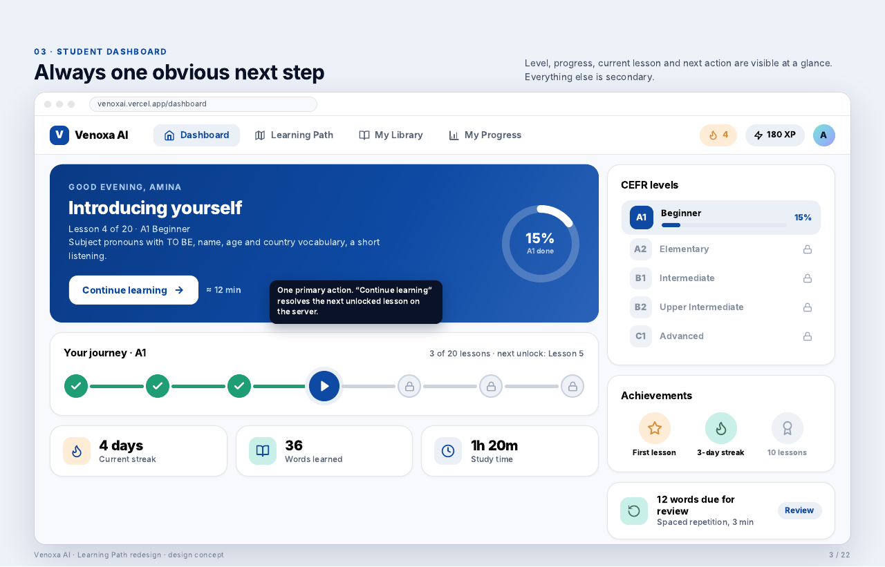
Page 03 · DashboardDesktop reference
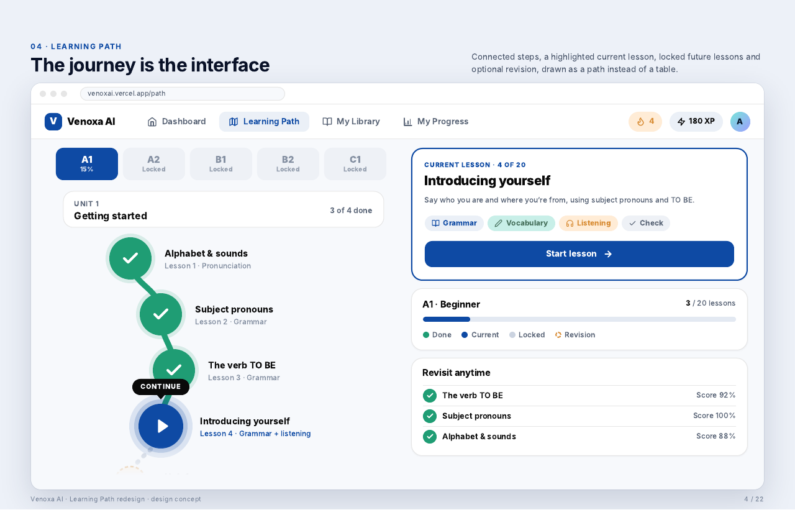
Page 04 · Learning PathDesktop reference
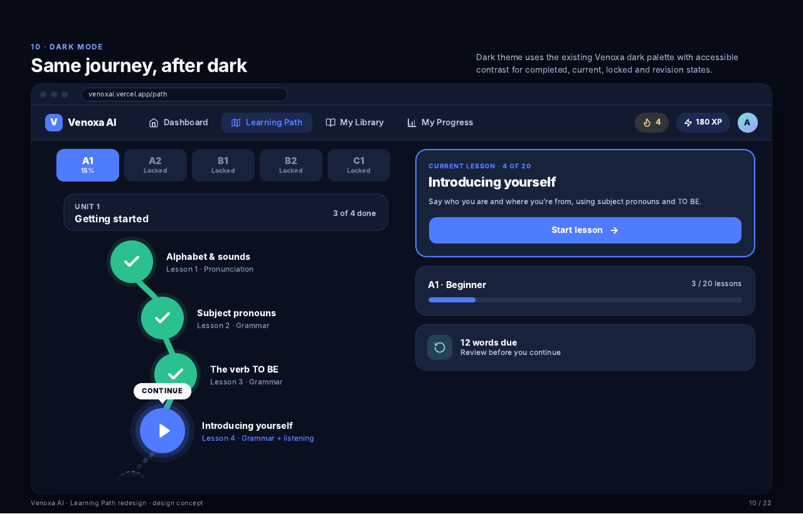
Page 10 · Dark modeLearning Path reference
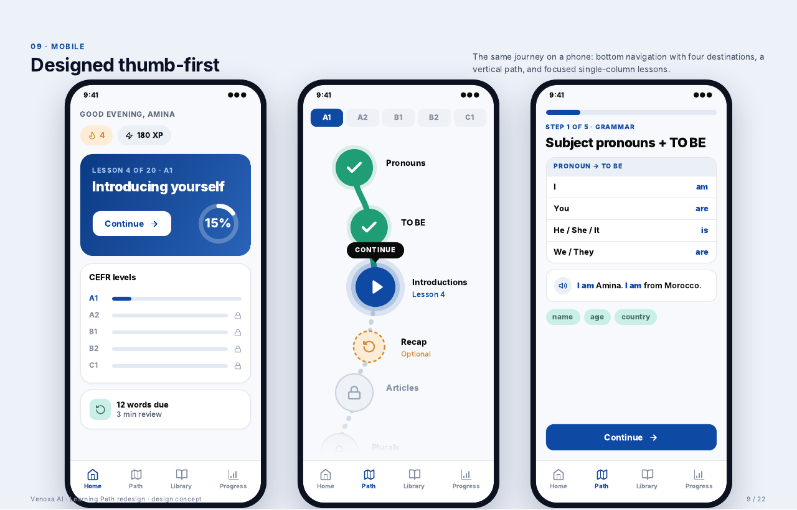
Page 09 · MobileDashboard / Path / Lesson
Actual · Dashboard desktop
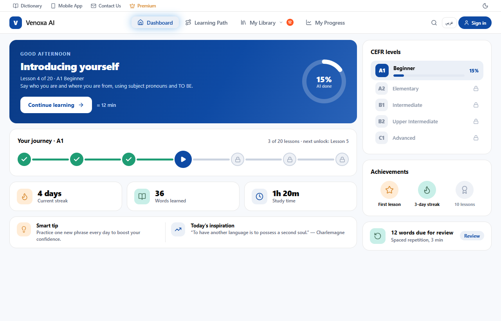
1280 · light · LTR
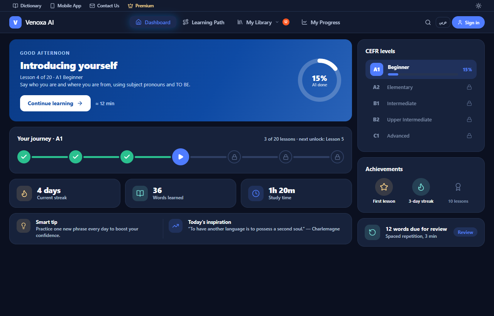
1280 · dark · LTR
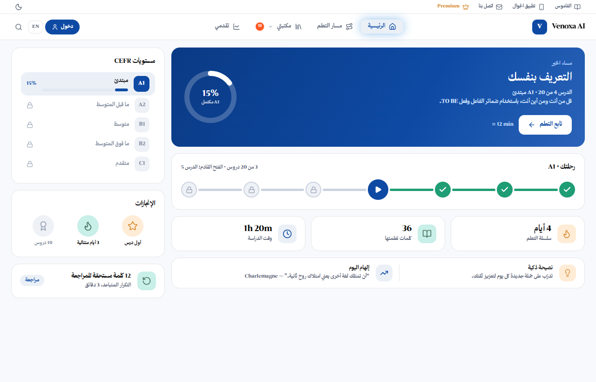
1280 · light · RTL
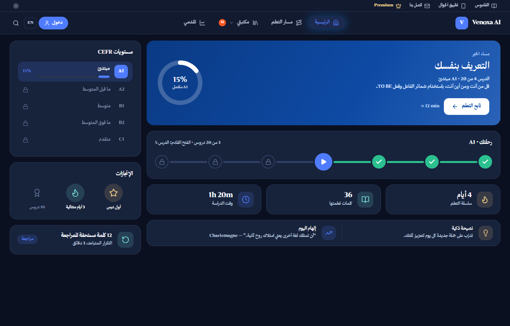
1280 · dark · RTL
Actual · Dashboard mobile
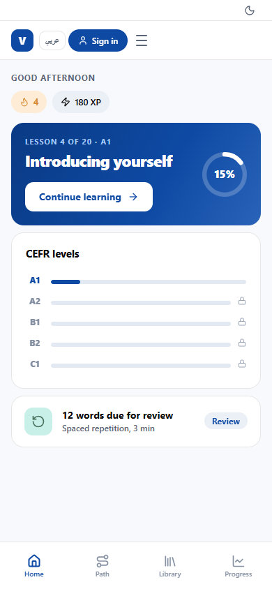
390 · light · LTR
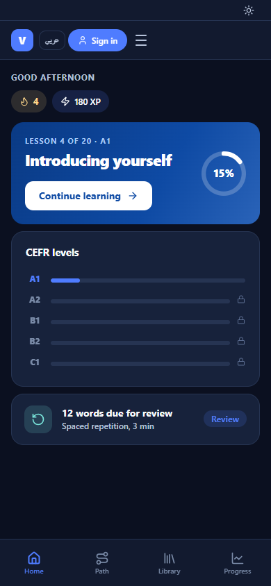
390 · dark · LTR
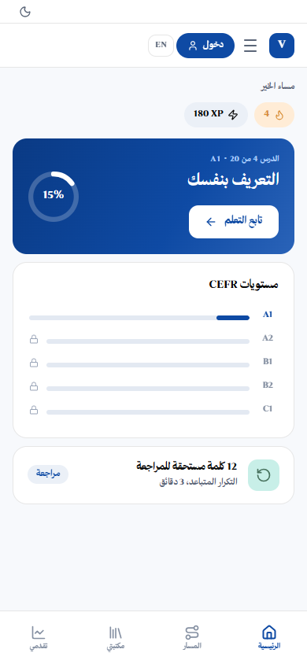
390 · light · RTL
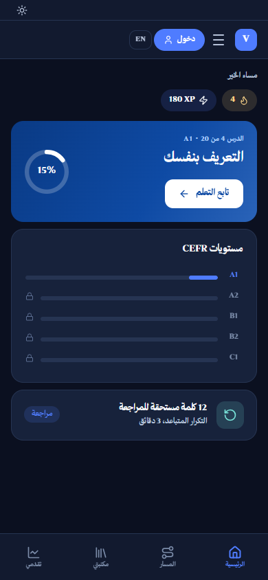
390 · dark · RTL
Actual · Learning Path desktop
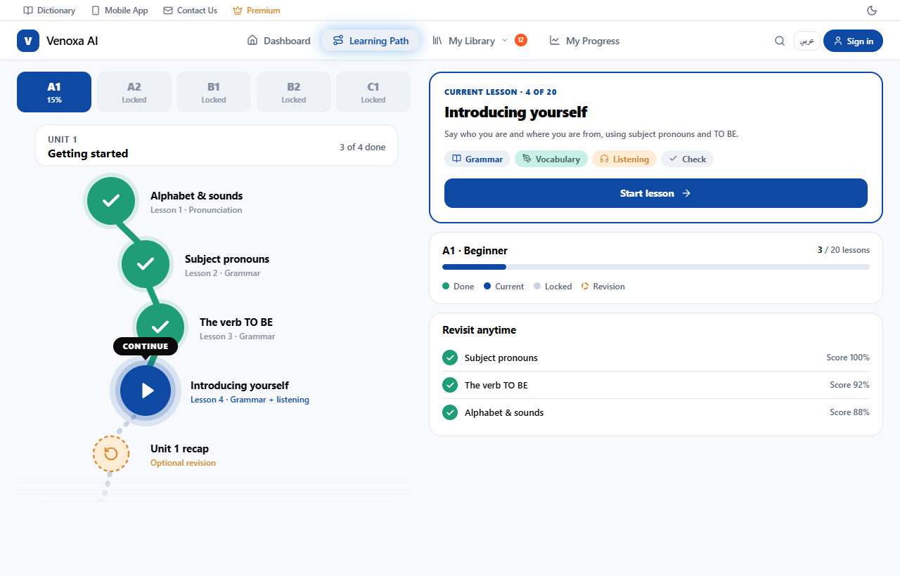
1280 · light · LTR
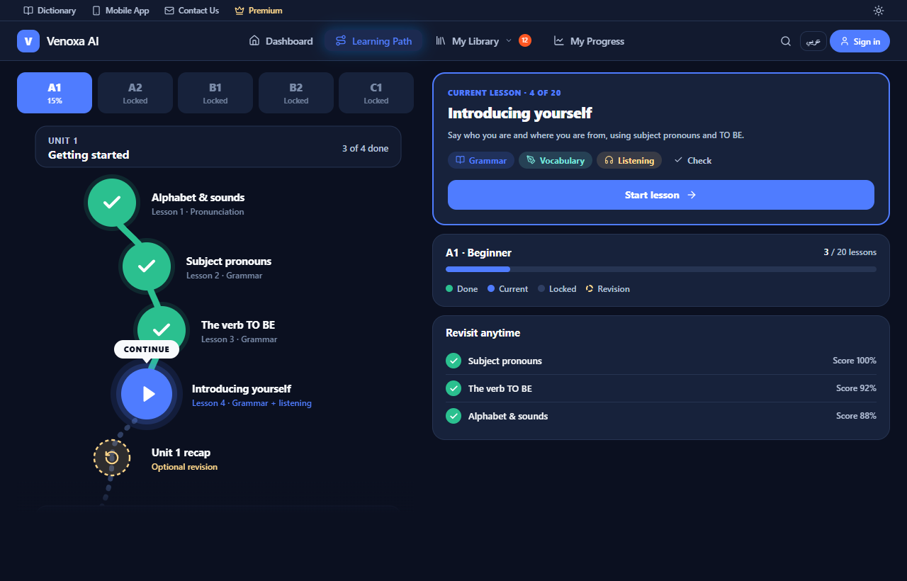
1280 · dark · LTR
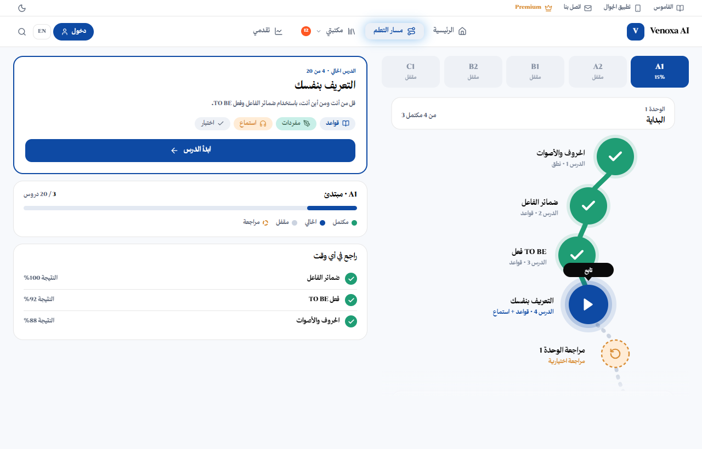
1280 · light · RTL
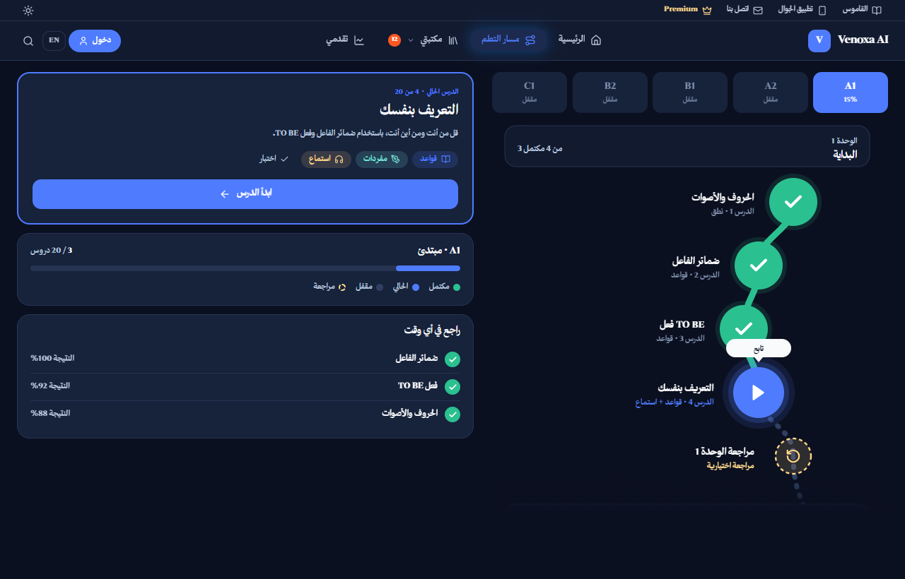
1280 · dark · RTL
Actual · Learning Path mobile
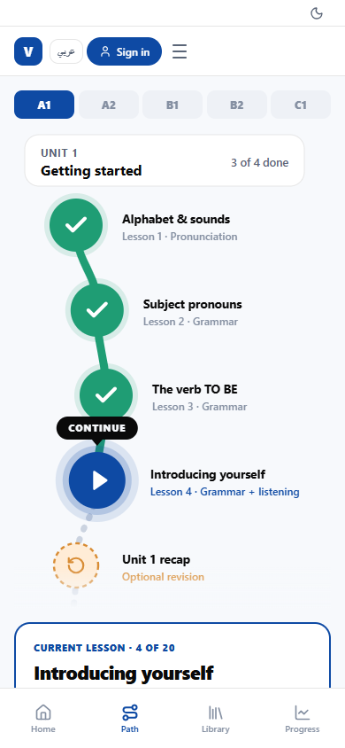
390 · light · LTR
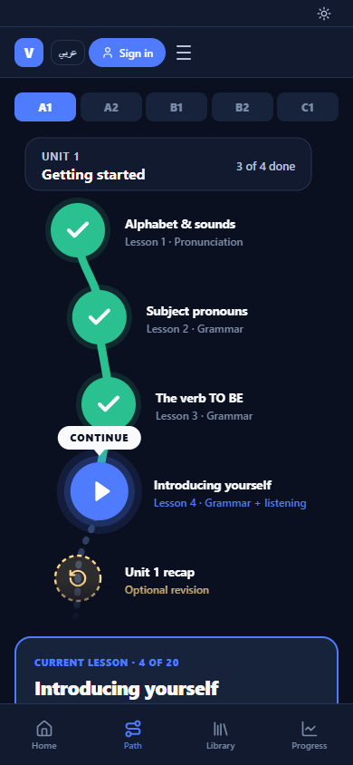
390 · dark · LTR
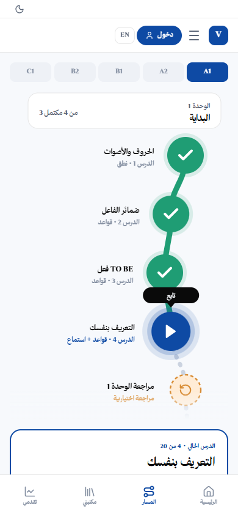
390 · light · RTL
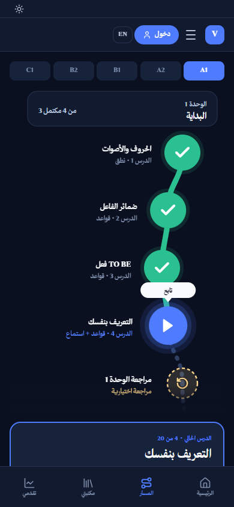
390 · dark · RTL
Known gaps at this checkpoint: signed-out header chips; on mobile the Learning Path keeps its current-lesson / progress / revisit rail below the map (the approved mobile mockup shows the map alone), and the mobile path keeps the unit banner. Both are deliberate so actions and progress stay reachable on a phone.